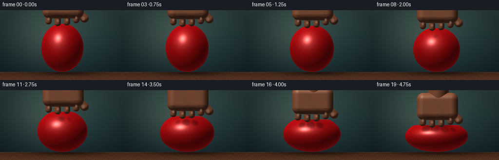
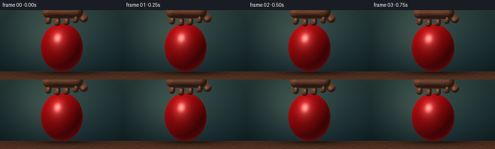
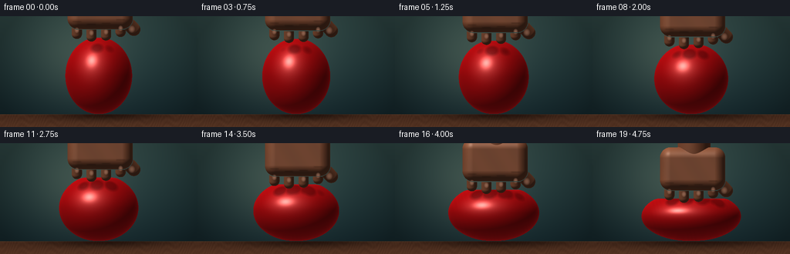
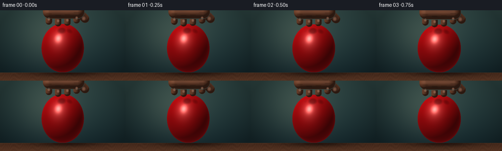

CODING AGENTS AS PIXEL WORLD MODELS
traex/DeepSeek-V4.1-Flash · phygen_013
点击播放 · 原生 RGB 像素
逐轮保存的候选
回放视频、检查图与代码变化。
每份候选均可单独播放。实际图片检查记录在下方工具轨迹中。
候选 01播放与检查图
点击播放 · 原生 RGB 像素


展开代码变化
--- 上一保存版本
+++ 本次保存版本
@@ -0,0 +1,372 @@
+from pathlib import Path
+
+import numpy as np
+from PIL import Image, ImageFilter
+
+import artifact_io
+
+
+WIDTH = 256
+HEIGHT = 144
+FRAMES = 20
+FPS = 4.0
+SS = 2 # supersampling factor
+
+
+def smooth_max(a, b, k):
+ h = np.clip(0.5 + 0.5 * (a - b) / k, 0.0, 1.0)
+ return b * (1.0 - h) + a * h + k * h * (1.0 - h)
+
+
+def ellipsoid_sdf(x, y, z, center, radii):
+ qx = (x - center[0]) / radii[0]
+ qy = (y - center[1]) / radii[1]
+ qz = (z - center[2]) / radii[2]
+ k0 = np.sqrt(qx * qx + qy * qy + qz * qz)
+ k1 = np.sqrt(
+ (qx / radii[0]) ** 2
+ + (qy / radii[1]) ** 2
+ + (qz / radii[2]) ** 2
+ )
+ return k0 * (k0 - 1.0) / np.maximum(k1, 1e-6)
+
+
+def rounded_box_sdf(x, y, z, center, half_size, radius):
+ qx = np.abs(x - center[0]) - half_size[0]
+ qy = np.abs(y - center[1]) - half_size[1]
+ qz = np.abs(z - center[2]) - half_size[2]
+ outside = np.sqrt(
+ np.maximum(qx, 0.0) ** 2
+ + np.maximum(qy, 0.0) ** 2
+ + np.maximum(qz, 0.0) ** 2
+ )
+ inside = np.minimum(np.maximum(qx, np.maximum(qy, qz)), 0.0)
+ return outside + inside - radius
+
+
+def capsule_sdf(x, y, z, start, end, radius):
+ ax = x - start[0]
+ ay = y - start[1]
+ az = z - start[2]
+ bx = end[0] - start[0]
+ by = end[1] - start[1]
+ bz = end[2] - start[2]
+ h = np.clip((ax * bx + ay * by + az * bz) / (bx * bx + by * by + bz * bz), 0.0, 1.0)
+ dx = ax - bx * h
+ dy = ay - by * h
+ dz = az - bz * h
+ return np.sqrt(dx * dx + dy * dy + dz * dz) - radius
+
+
+def scene_state(frame_index):
+ t = frame_index / (FRAMES - 1)
+ pressure = t ** 1.75
+ table_y = -0.615
+ radius_x = 0.48 + 0.235 * pressure
+ radius_y = 0.555 - 0.195 * pressure
+ radius_z = 0.50 + 0.105 * pressure
+ center_y = table_y + radius_y
+ top_y = center_y + radius_y - 0.105 * pressure
+ return {
+ "pressure": pressure,
+ "table_y": table_y,
+ "rx": radius_x,
+ "ry": radius_y,
+ "rz": radius_z,
+ "center_y": center_y,
+ "top_y": top_y,
+ }
+
+
+def balloon_sdf(x, y, z, state):
+ s = state
+ body = ellipsoid_sdf(
+ x, y, z, (0.0, s["center_y"], 0.12), (s["rx"], s["ry"], s["rz"])
+ )
+ body = smooth_max(body, s["table_y"] - y, 0.018)
+ body = smooth_max(body, y - s["top_y"], 0.028)
+
+ # Finger contacts make shallow, pressure-dependent dimples in the latex.
+ if s["pressure"] > 0.015:
+ for finger_x, tip_offset in zip(
+ (-0.315, -0.105, 0.105, 0.315), (0.050, 0.012, 0.026, 0.078)
+ ):
+ dent = ellipsoid_sdf(
+ x,
+ y,
+ z,
+ (finger_x, s["top_y"] + tip_offset + 0.045, 0.52),
+ (0.070, 0.052, 0.085),
+ )
+ body = smooth_max(body, -dent, 0.018)
+ return body
+
+
+def hand_sdf(x, y, z, state):
+ top = state["top_y"]
+ palm = rounded_box_sdf(
+ x, y, z, (0.02, top + 0.430, 0.82), (0.315, 0.155, 0.145), 0.155
+ )
+ wrist = capsule_sdf(
+ x, y, z, (0.035, top + 0.555, 0.87), (0.055, top + 1.20, 0.95), 0.235
+ )
+ hand = np.minimum(palm, wrist)
+
+ for finger_x, tip_offset in zip(
+ (-0.315, -0.105, 0.105, 0.315), (0.050, 0.012, 0.026, 0.078)
+ ):
+ finger = capsule_sdf(
+ x,
+ y,
+ z,
+ (finger_x, top + 0.305, 0.79),
+ (finger_x, top + tip_offset, 0.74),
+ 0.073,
+ )
+ hand = np.minimum(hand, finger)
+
+ thumb = capsule_sdf(
+ x,
+ y,
+ z,
+ (0.285, top + 0.350, 0.83),
+ (0.505, top + 0.115, 0.80),
+ 0.094,
+ )
+ return np.minimum(hand, thumb)
+
+
+def background(world_x, world_y, state):
+ h, w = world_y.shape
+ y_norm = (world_y - (-0.8)) / 1.6
+ x_norm = world_x / 1.4222
+
+ top = np.array([0.075, 0.155, 0.180], dtype=np.float64)
+ bottom = np.array([0.205, 0.315, 0.305], dtype=np.float64)
+ wall = top[None, None, :] * (1.0 - y_norm[..., None]) + bottom[None, None, :] * y_norm[..., None]
+
+ glow = np.exp(-(((world_x + 0.32) / 0.72) ** 2 + ((world_y - 0.20) / 0.67) ** 2))
+ wall += glow[..., None] * np.array([0.105, 0.095, 0.065])
+
+ # Broad studio falloff keeps the small frame from reading as a flat backdrop.
+ vignette = np.clip(1.0 - 0.28 * (x_norm**2 + 0.48 * (world_y / 0.8) ** 2), 0.68, 1.0)
+ wall *= vignette[..., None]
+
+ table_mask = world_y <= state["table_y"]
+ depth = np.clip((state["table_y"] - world_y) / 0.185, 0.0, 1.0)
+ grain = 0.5 + 0.5 * np.sin(67.0 * world_x + 8.0 * np.sin(15.0 * world_x) + 12.0 * depth)
+ fine = 0.5 + 0.5 * np.sin(143.0 * world_x + 5.0 * np.cos(23.0 * world_y))
+ wood = np.empty_like(wall)
+ wood[..., 0] = 0.255 + 0.075 * depth + 0.027 * grain + 0.010 * fine
+ wood[..., 1] = 0.145 + 0.047 * depth + 0.020 * grain + 0.007 * fine
+ wood[..., 2] = 0.095 + 0.030 * depth + 0.014 * grain + 0.005 * fine
+
+ edge = np.exp(-((world_y - state["table_y"]) / 0.009) ** 2)
+ wood += edge[..., None] * np.array([0.105, 0.075, 0.045])
+ wall = wall * (1.0 - table_mask[..., None]) + wood * table_mask[..., None]
+
+ # Contact and cast shadow on the tabletop.
+ shadow = np.exp(
+ -(
+ ((world_x - 0.09) / (state["rx"] * 1.22 + 0.10)) ** 2
+ + ((world_y + 0.620) / 0.074) ** 2
+ )
+ )
+ reflection = np.exp(
+ -(
+ (world_x / (state["rx"] * 0.78)) ** 2
+ + ((world_y + 0.595) / 0.046) ** 2
+ )
+ )
+ wall *= (1.0 - 0.58 * shadow * table_mask)[..., None]
+ wall += (0.075 * reflection * table_mask)[..., None] * np.array([0.80, 0.10, 0.08])
+ return np.clip(wall, 0.0, 1.0)
+
+
+def normal_for_hit(x, y, z, material):
+ eps = 0.0025
+ bx = np.where(material == 0, 1.0, 0.0)
+
+ def field(px, py, pz):
+ b = balloon_sdf(px, py, pz, STATE)
+ h = hand_sdf(px, py, pz, STATE)
+ return np.where(bx > 0.5, b, h)
+
+ nx = field(x + eps, y, z) - field(x - eps, y, z)
+ ny = field(x, y + eps, z) - field(x, y - eps, z)
+ nz = field(x, y, z + eps) - field(x, y, z - eps)
+ length = np.maximum(np.sqrt(nx * nx + ny * ny + nz * nz), 1e-7)
+ return nx / length, ny / length, nz / length
+
+
+def shade_balloon(x, y, z, nx, ny, nz, state):
+ light = np.array([-0.43, 0.71, 0.68], dtype=np.float64)
+ light /= np.linalg.norm(light)
+ view = np.array([0.0, 0.0, 1.0], dtype=np.float64)
+ half = light + view
+ half /= np.linalg.norm(half)
+
+ ndl = np.maximum(nx * light[0] + ny * light[1] + nz * light[2], 0.0)
+ ndh = np.maximum(nx * half[0] + ny * half[1] + nz * half[2], 0.0)
+ nv = np.maximum(nz, 0.0)
+
+ # Soft shadow and contact occlusion from the fingers.
+ s1 = hand_sdf(x + light[0] * 0.10, y + light[1] * 0.10, z + light[2] * 0.10, state)
+ s2 = hand_sdf(x + light[0] * 0.20, y + light[1] * 0.20, z + light[2] * 0.20, state)
+ shadow = np.clip(0.46 + 0.54 * np.minimum(s1, s2) / 0.055, 0.46, 1.0)
+ contact = np.exp(-np.maximum(hand_sdf(x, y, z, state), 0.0) / 0.045)
+
+ base = np.array([0.86, 0.045, 0.060], dtype=np.float64)
+ ambient = 0.24 + 0.10 * np.maximum(ny, 0.0)
+ diffuse = ambient + 0.82 * ndl * shadow * (0.76 + 0.24 * contact)
+ color = base[None, :] * diffuse[..., None]
+
+ fresnel = (1.0 - np.clip(nz, 0.0, 1.0)) ** 2.7
+ color += fresnel[..., None] * np.array([0.255, 0.025, 0.030])
+ color += np.maximum(-ny, 0.0)[..., None] * np.array([0.085, 0.010, 0.012])
+
+ broad = np.power(ndh, 13.0) * (0.16 + 0.12 * shadow)
+ sharp = np.power(ndh, 82.0) * 0.72
+ color += (broad + sharp)[..., None] * np.array([1.0, 0.80, 0.74])
+
+ # Sparse latex folds become visible as the internal pressure rises.
+ folds = np.sin(36.0 * x + 27.0 * y + 7.0 * np.sin(13.0 * x))
+ color *= (1.0 + 0.018 * state["pressure"] * folds * (1.0 - nz))[..., None]
+ return np.clip(color, 0.0, 1.5)
+
+
+def shade_hand(x, y, z, nx, ny, nz, state):
+ light = np.array([-0.46, 0.76, 0.60], dtype=np.float64)
+ light /= np.linalg.norm(light)
+ view = np.array([0.0, 0.0, 1.0], dtype=np.float64)
+ half = light + view
+ half /= np.linalg.norm(half)
+
+ ndl = np.maximum(nx * light[0] + ny * light[1] + nz * light[2], 0.0)
+ ndh = np.maximum(nx * half[0] + ny * half[1] + nz * half[2], 0.0)
+ nv = np.maximum(nz, 0.0)
+
+ base = np.array([0.585, 0.335, 0.225], dtype=np.float64)
+ warmth = 0.5 + 0.5 * np.sin(15.0 * x + 9.0 * y)
+ base = base + warmth[..., None] * np.array([0.030, 0.012, 0.002])
+ ambient = 0.28 + 0.10 * np.maximum(ny, 0.0)
+ color = base * (ambient + 0.78 * ndl)[..., None]
+ fresnel = (1.0 - np.clip(nz, 0.0, 1.0)) ** 3.0
+ color += fresnel[..., None] * np.array([0.085, 0.040, 0.022])
+ color += (np.power(ndh, 10.0) * 0.11 + np.power(ndh, 55.0) * 0.15)[..., None]
+
+ top = state["top_y"]
+ # Knuckle creases.
+ crease = np.zeros_like(x)
+ for finger_x, tip_offset in zip(
+ (-0.315, -0.105, 0.105, 0.315), (0.050, 0.012, 0.026, 0.078)
+ ):
+ cx = np.exp(-((x - finger_x) / 0.065) ** 8)
+ cy = np.exp(-((y - (top + tip_offset + 0.175)) / 0.010) ** 2)
+ crease = np.maximum(crease, cx * cy)
+ color *= (1.0 - 0.18 * crease)[..., None]
+
+ # Four fingernails catch the key light near the contact points.
+ nail = np.zeros_like(x)
+ for finger_x, tip_offset in zip(
+ (-0.315, -0.105, 0.105, 0.315), (0.050, 0.012, 0.026, 0.078)
+ ):
+ ex = (x - finger_x) / 0.036
+ ey = (y - (top + tip_offset + 0.052)) / 0.044
+ nail = np.maximum(nail, np.clip(1.0 - ex * ex - ey * ey, 0.0, 1.0))
+ thumb_ex = (x - 0.474) / 0.052
+ thumb_ey = (y - (top + 0.118)) / 0.058
+ nail = np.maximum(nail, 0.82 * np.clip(1.0 - thumb_ex * thumb_ex - thumb_ey * thumb_ey, 0.0, 1.0))
+ nail_color = np.array([0.74, 0.51, 0.405])
+ color = color * (1.0 - 0.70 * nail[..., None]) + nail_color * (0.70 * nail[..., None])
+ return np.clip(color, 0.0, 1.5)
+
+
+def render_frame(frame_index):
+ global STATE
+ STATE = scene_state(frame_index)
+ h = HEIGHT * SS
+ w = WIDTH * SS
+ px = (np.arange(w, dtype=np.float64) + 0.5) / w
+ py = (np.arange(h, dtype=np.float64) + 0.5) / h
+ world_x = (px * 2.0 - 1.0) * 1.4222
+ world_y = (1.0 - py * 2.0) * 0.8
+ x, y = np.meshgrid(world_x, world_y)
+
+ image = background(x, y, STATE)
+
+ z = np.full_like(x, 3.0)
+ hit = np.zeros_like(x, dtype=bool)
+ material = np.zeros_like(x, dtype=np.uint8)
+ for _ in range(78):
+ b = balloon_sdf(x, y, z, STATE)
+ hd = hand_sdf(x, y, z, STATE)
+ distance = np.minimum(b, hd)
+ newly_hit = (~hit) & (distance < 0.0013)
+ material[newly_hit] = np.where(hd[newly_hit] < b[newly_hit], 1, 0)
+ hit |= newly_hit
+ step = np.maximum(0.004, np.minimum(distance * 0.88, 0.065))
+ z -= step * (~hit)
+ if np.all(hit | (z < -0.95)):
+ break
+
+ if np.any(hit):
+ hx = x[hit]
+ hy = y[hit]
+ hz = z[hit]
+ hm = material[hit]
+ nx, ny, nz = normal_for_hit(hx, hy, hz, hm)
+
+ colors = np.zeros((hx.size, 3), dtype=np.float64)
+ balloon_mask = hm == 0
+ hand_mask = hm == 1
+ if np.any(balloon_mask):
+ colors[balloon_mask] = shade_balloon(
+ hx[balloon_mask],
+ hy[balloon_mask],
+ hz[balloon_mask],
+ nx[balloon_mask],
+ ny[balloon_mask],
+ nz[balloon_mask],
+ STATE,
+ )
+ if np.any(hand_mask):
+ colors[hand_mask] = shade_hand(
+ hx[hand_mask],
+ hy[hand_mask],
+ hz[hand_mask],
+ nx[hand_mask],
+ ny[hand_mask],
+ nz[hand_mask],
+ STATE,
+ )
+ image[hit] = colors
+
+ # A restrained bloom keeps the latex highlight rounded at the final resolution.
+ tone = np.clip(image / (1.0 + 0.22 * image), 0.0, 1.0)
+ source = Image.fromarray(np.round(tone * 255.0).astype(np.uint8), "RGB")
+ array = np.asarray(source, dtype=np.float32) / 255.0
+ bright = np.clip(array - 0.70, 0.0, None)
+ glow = np.asarray(
+ Image.fromarray(np.round(bright * 255.0).astype(np.uint8), "RGB").filter(
+ ImageFilter.GaussianBlur(radius=3.2)
+ ),
+ dtype=np.float32,
+ ) / 255.0
+ array = np.clip(array + glow * 0.18, 0.0, 1.0)
+
+ final = Image.fromarray(np.round(array * 255.0).astype(np.uint8), "RGB").resize(
+ (WIDTH, HEIGHT), Image.Resampling.LANCZOS
+ )
+ return np.asarray(final, dtype=np.uint8)
+
+
+def main():
+ case_dir = Path(__file__).resolve().parent
+ frames = np.stack([render_frame(i) for i in range(FRAMES)], axis=0)
+ artifact_io.save(frames, case_dir)
+ print(f"rendered {frames.shape} to {case_dir}")
+
+
+if __name__ == "__main__":
+ main()
候选 02播放与检查图
点击播放 · 原生 RGB 像素


展开代码变化
--- 上一保存版本
+++ 本次保存版本
@@ -105,10 +105,10 @@
def hand_sdf(x, y, z, state):
top = state["top_y"]
palm = rounded_box_sdf(
- x, y, z, (0.02, top + 0.430, 0.82), (0.315, 0.155, 0.145), 0.155
+ x, y, z, (0.02, top + 0.430, 0.98), (0.315, 0.155, 0.145), 0.155
)
wrist = capsule_sdf(
- x, y, z, (0.035, top + 0.555, 0.87), (0.055, top + 1.20, 0.95), 0.235
+ x, y, z, (0.035, top + 0.555, 1.02), (0.055, top + 1.20, 1.10), 0.235
)
hand = np.minimum(palm, wrist)
@@ -119,8 +119,8 @@
x,
y,
z,
- (finger_x, top + 0.305, 0.79),
- (finger_x, top + tip_offset, 0.74),
+ (finger_x, top + 0.305, 0.70),
+ (finger_x, top + tip_offset, 0.62),
0.073,
)
hand = np.minimum(hand, finger)
@@ -130,7 +130,7 @@
y,
z,
(0.285, top + 0.350, 0.83),
- (0.505, top + 0.115, 0.80),
+ (0.505, top + 0.115, 0.67),
0.094,
)
return np.minimum(hand, thumb)
@@ -344,18 +344,18 @@
# A restrained bloom keeps the latex highlight rounded at the final resolution.
tone = np.clip(image / (1.0 + 0.22 * image), 0.0, 1.0)
- source = Image.fromarray(np.round(tone * 255.0).astype(np.uint8), "RGB")
+ source = Image.fromarray(np.round(tone * 255.0).astype(np.uint8))
array = np.asarray(source, dtype=np.float32) / 255.0
bright = np.clip(array - 0.70, 0.0, None)
glow = np.asarray(
- Image.fromarray(np.round(bright * 255.0).astype(np.uint8), "RGB").filter(
+ Image.fromarray(np.round(bright * 255.0).astype(np.uint8)).filter(
ImageFilter.GaussianBlur(radius=3.2)
),
dtype=np.float32,
) / 255.0
array = np.clip(array + glow * 0.18, 0.0, 1.0)
- final = Image.fromarray(np.round(array * 255.0).astype(np.uint8), "RGB").resize(
+ final = Image.fromarray(np.round(array * 255.0).astype(np.uint8)).resize(
(WIDTH, HEIGHT), Image.Resampling.LANCZOS
)
return np.asarray(final, dtype=np.uint8)
可观测工具轨迹
实际执行的命令与返回图片。
命令 1exit 0
/bin/bash -c "pwd && rg --files -g 'prompt.txt' -g 'GENERATION_RULES.md' -g 'task_spec.json' -g '"'!node_modules'"'"
命令 2exit 0
/bin/bash -c "find . -maxdepth 2 -type f -printf '%p %s bytes\\n' | sort | head -200"
命令 3exit 0
/bin/bash -c 'git status --short --branch'
命令 4exit 0
/bin/bash -c 'cat prompt.txt'
命令 5exit 0
/bin/bash -c 'cat GENERATION_RULES.md'
命令 6exit 0
/bin/bash -c 'cat task_spec.json'
命令 7exit 0
/bin/bash -c "sed -n '1,240p' artifact_io.py"
命令 8exit 0
/bin/bash -c "sed -n '1,240p' player_template.html"
命令 9exit 0
/bin/bash -c "command -v chafa || true; command -v viu || true; command -v jp2 || true; python - <<'PY'
import numpy, PIL
print('numpy', numpy.__version__)
print('PIL', PIL.__version__)
PY"命令 10exit 0
/bin/bash -c 'python generate.py'
命令 11exit 0
/bin/bash -c 'command -v img2txt || true; command -v jp2 || true; command -v viu || true; command -v chafa || true; command -v convert || true'
命令 12exit 0
/bin/bash -c "python - <<'PY'
from PIL import Image
import numpy as np
frames=np.stack([np.asarray(Image.open(f'frames/{i:02d}.png')) for i in range(20)])
for i in [0,4,8,12,16,19]:
a=frames[i]
# dominant/class map at 64x36
im=Image.fromarray(a).resize((64,36),Image.Resampling.BILINEAR)
x=np.asarray(im).astype(float)
r,g,b=x[...,0],x[...,1],x[...,2]
lum=.2126*r+.7152*g+.0722*b
red=(r>g*1.45)&(r>b*1.25)&(r>55)
skin=(r>g*1.2)&(g>b*1.12)&(r>60)&(~red)
bg=(~red)&(~skin)
chars=np.full(lum.shape,' ',dtype='<U1')
grad=' .:-=+*#%@'
chars[bg]=np.array(list(grad))[np.clip((lum[bg]/255*9).astype(int),0,9)]
chars[skin]='s'
chars[red]='R'
print(f'FRAME {i:02d}')
print('\\n'.join(''.join(row) for row in chars))
ys,xs=np.where(red)
if len(xs): print('red bbox',xs.min(),xs.max(),ys.min(),ys.max(),'red px',len(xs),'mean',x[red].mean(axis=0).round(1))
PY"命令 13exit 0
/bin/bash -c "python - <<'PY'
print('\\033[41m RED \\033[0m')
print('\\033[48;2;220;30;40m \\033[48;2;100;150;90m \\033[0m')
PY"命令 14exit 0
/bin/bash -c "python - <<'PY'
from PIL import Image
import numpy as np
import colorsys
for fi in [0,8,19]:
im=np.asarray(Image.open(f'frames/{fi:02d}.png')).astype(float)/255
# HSV vectorized using max/min
mx=im.max(2); mn=im.min(2); d=mx-mn
s=np.where(mx>1e-6,d/mx,0)
hue=np.zeros_like(mx)
mask=d>1e-6
r,g,b=im[...,0],im[...,1],im[...,2]
i=(mx==r)&mask; hue[i]=((g[i]-b[i])/d[i])%6
i=(mx==g)&mask; hue[i]=(b[i]-r[i])/d[i]+2
i=(mx==b)&mask; hue[i]=(r[i]-g[i])/d[i]+4
hue*=60
lum=im@np.array([.2126,.7152,.0722])
red=((hue<12)|(hue>345))&(s>.55)&(mx>.08)
skin=(hue>=10)&(hue<40)&(s>.25)&(s<.85)&(mx>.15)
teal=(hue>140)&(hue<210)
table=np.zeros_like(red)
# bottom region estimate
table[111:,:]=lum[111:,:]<.28
# downsample classify majority
chars=[]
for yy in range(0,144,4):
row=''
for xx in range(0,256,4):
block=slice(yy,yy+4),slice(xx,xx+4)
if red[block].mean()>.3: ch='R'
elif skin[block].mean()>.35: ch='H'
elif teal[block].mean()>.5:
l=lum[block].mean(); ch=' .:-=+'[min(5,int(l*16))]
else:
l=lum[block].mean(); ch=' .:-=+'[min(5,int(l*18))]
row+=ch
chars.append(row)
print('FRAME',fi,'red avg',im[red].mean(0) if red.any() else None,'skin avg',im[skin].mean(0) if skin.any() else None)
print('\\n'.join(chars))
PY"命令 15exit 0
/bin/bash -c 'mkdir -p .tmp/candidate_v1 && cp -r frames inspection.png transition_check.png pixels.npz index.html .tmp/candidate_v1/'
命令 16exit 0
/bin/bash -c "python - <<'PY'
import generate
from PIL import Image
import numpy as np
for i in [0,8,19]:
a=generate.render_frame(i)
Image.fromarray(a).save(f'.tmp/preview_{i:02d}.png')
print(i, 'mean',a.mean(axis=(0,1)).round(1))
PY"命令 17exit 0
/bin/bash -c "python - <<'PY'
from PIL import Image
import numpy as np
for fi in [0,8,19]:
im=np.asarray(Image.open(f'.tmp/preview_{fi:02d}.png')).astype(float)/255
mx=im.max(2); mn=im.min(2); d=mx-mn
s=np.where(mx>1e-6,d/mx,0); hue=np.zeros_like(mx); m=d>1e-6; r,g,b=im[...,0],im[...,1],im[...,2]
i=(mx==r)&m; hue[i]=((g[i]-b[i])/d[i])%6
i=(mx==g)&m; hue[i]=(b[i]-r[i])/d[i]+2
i=(mx==b)&m; hue[i]=(r[i]-g[i])/d[i]+4
hue*=60; lum=im@np.array([.2126,.7152,.0722])
red=((hue<12)|(hue>345))&(s>.55)&(mx>.08)
skin=(hue>=10)&(hue<40)&(s>.25)&(s<.85)&(mx>.15)
teal=(hue>140)&(hue<210)
chars=[]
for yy in range(0,144,4):
row=''
for xx in range(0,256,4):
bl=slice(yy,yy+4),slice(xx,xx+4)
if red[bl].mean()>.3: ch='R'
elif skin[bl].mean()>.35: ch='H'
elif teal[bl].mean()>.5:
l=lum[bl].mean(); ch=' .:-=+'[min(5,int(l*16))]
else:
l=lum[bl].mean(); ch=' .:-=+'[min(5,int(l*18))]
row+=ch
chars.append(row)
print('FRAME',fi); print('\\n'.join(chars))
PY"命令 18exit 0
/bin/bash -c "python - <<'PY'
from PIL import Image
import numpy as np
for fi in [0,8,19]:
im=np.asarray(Image.open(f'.tmp/preview_{fi:02d}.png')).astype(float)/255
rgb=np.array([.28,.20,.15])
# classify nearest with broad palette, but preserve brightness within object
r,g,b=im[...,0],im[...,1],im[...,2]
mx=im.max(2); mn=im.min(2); d=mx-mn
s=np.where(mx>1e-6,d/mx,0); hue=np.zeros_like(mx); m=d>1e-6
i=(mx==r)&m; hue[i]=((g[i]-b[i])/d[i])%6
i=(mx==g)&m; hue[i]=(b[i]-r[i])/d[i]+2
i=(mx==b)&m; hue[i]=(r[i]-g[i])/d[i]+4
hue*=60; lum=im@np.array([.2126,.7152,.0722])
red=((hue<13)|(hue>344))&(s>.50)&(mx>.065)
skin=(hue>=9)&(hue<48)&(s>.20)&(s<.88)&(mx>.12)
teal=(hue>135)&(hue<215)
chars=[]
for yy in range(0,144,4):
row=''
for xx in range(0,256,4):
bl=slice(yy,yy+4),slice(xx,xx+4)
if red[bl].mean()>.28: ch='R'
elif skin[bl].mean()>.30: ch='H'
else:
l=lum[bl].mean(); ch=' .:-=+'[min(5,int(l*16))]
row+=ch
chars.append(row)
print('FRAME',fi); print('\\n'.join(chars))
PY"命令 19exit 1
/bin/bash -c "python - <<'PY'
from PIL import Image
import numpy as np
for fi in [0,4,8,12,16,19]:
im=np.asarray(Image.open(f'.tmp/preview_{fi:02d}.png')).astype(float)/255
r,g,b=im[...,0],im[...,1],im[...,2]
red=(r>g*1.9)&(r>b*1.7)&(r>.12)
skin=(r>g*1.18)&(g>b*1.10)&(r>.16)&(~red)
# only upper 80%
red[:15]=False
for name,m in [('red',red),('skin',skin)]:
yy,xx=np.where(m)
print(fi,name,'bbox', (xx.min(),yy.min(),xx.max(),yy.max()), 'n',len(xx),'mean',im[m].mean(0).round(3))
print('center row red widths',[(y,int(red[y].sum())) for y in [30,50,70,90,105,115]])
PY"命令 20exit 0
/bin/bash -c "python - <<'PY'
import generate
from PIL import Image
for i in [4,12,16]:
Image.fromarray(generate.render_frame(i)).save(f'.tmp/preview_{i:02d}.png')
PY"命令 21exit 0
/bin/bash -c "python - <<'PY'
from PIL import Image
import numpy as np
for fi in [0,4,8,12,16,19]:
im=np.asarray(Image.open(f'.tmp/preview_{fi:02d}.png')).astype(float)/255
r,g,b=im[...,0],im[...,1],im[...,2]
red=(r>g*1.9)&(r>b*1.7)&(r>.12); red[:15]=False
skin=(r>g*1.18)&(g>b*1.10)&(r>.16)&(~red); skin[:20]=False; skin[105:]=False
for name,m in [('red',red),('skin',skin)]:
yy,xx=np.where(m)
print(fi,name,'bbox', (xx.min(),yy.min(),xx.max(),yy.max()), 'n',len(xx),'mean',im[m].mean(0).round(3))
PY"命令 22exit 0
/bin/bash -c "python - <<'PY'
from PIL import Image
im=Image.open('.tmp/preview_19.png')
# 256x144 to 100x56 using luminance ramp, no classification
im=im.convert('L').resize((100,56),Image.Resampling.BOX)
a=__import__('numpy').asarray(im)
chars=' .:-=+*#%@'
print('\\n'.join(''.join(chars[min(9,int(v)*10//256)] for v in row) for row in a))
PY"命令 23exit 0
/bin/bash -c "python - <<'PY'
from PIL import Image
import numpy as np
im=np.asarray(Image.open('.tmp/preview_19.png')).astype(int)
# print color swatches sampled by regions as hex + brightest x/y for red
for name,(y0,y1,x0,x1) in {'wall':(10,30,10,50),'table':(130,144,10,50),'balloon_mid':(80,100,100,150),'hand':(40,55,100,150)}.items():
a=im[y0:y1,x0:x1]; print(name,np.median(a.reshape(-1,3),axis=0),a.mean((0,1)).round(1))
# Find 25 brightest pixels and positions
lum=im@np.array([.2126,.7152,.0722]); inds=np.argsort(lum.ravel())[-20:]
for ind in inds[::-1]: y,x=divmod(ind,256); print((x,y),im[y,x].tolist())
PY"命令 24exit 0
/bin/bash -c "python - <<'PY'
from PIL import Image
import numpy as np
for fi in [0,8,19]:
im=np.asarray(Image.open(f'.tmp/preview_{fi:02d}.png')).astype(float)/255
r,g,b=im[...,0],im[...,1],im[...,2]
red=(r>g*1.9)&(r>b*1.7)&(r>.12)
skin=(r>g*1.18)&(g>b*1.10)&(r>.16)&(~red)
print('\\nframe',fi)
for y in range(10,100,4):
out=[]
for name,m in [('R',red[y]),('S',skin[y])]:
idx=np.where(m)[0]
if len(idx):
# groups >2
cuts=np.where(np.diff(idx)>1)[0]
starts=np.r_[idx[0],idx[cuts+1]]; ends=np.r_[idx[cuts],idx[-1]]
groups=[(int(a),int(b)) for a,b in zip(starts,ends) if b-a>=2]
if groups: out.append(name+str(groups))
print(f'{y:3}', ' '.join(out))
PY"命令 25exit 0
/bin/bash -c 'python generate.py'
命令 26exit 0
/bin/bash -c "python - <<'PY'
from pathlib import Path
import json, numpy as np
from PIL import Image
p=Path('.')
spec=json.loads(Path('task_spec.json').read_text())
z=np.load('pixels.npz')['pixels']
files=sorted(Path('frames').glob('*.png'))
frames=np.stack([np.asarray(Image.open(f)) for f in files])
print('spec',spec)
print('pixels',z.shape,z.dtype,'frames',frames.shape,frames.dtype,'count',len(files))
print('files',[(f.name,f.stat().st_size) for f in [Path('index.html'),Path('pixels.npz'),Path('inspection.png'),Path('transition_check.png')]])
print('range',int(frames.min()),int(frames.max()),'means',frames.mean(axis=(1,2,3)).round(2).tolist())
print('unique frame hashes',len({hash(f.tobytes()) for f in frames}))
# frame-to-frame pixel change as motion sanity
print('diffs',[round(float(np.abs(frames[i].astype(int)-frames[i-1].astype(int)).mean()),2) for i in range(1,20)])
PY"命令 27exit 0
/bin/bash -c "python - <<'PY'
from pathlib import Path
from PIL import Image
import numpy as np
frames=[np.asarray(Image.open(f'frames/{i:02d}.png')).astype(float)/255 for i in range(20)]
print('frame red_bbox skin_bbox red_n skin_n')
for i,im in enumerate(frames):
r,g,b=im[...,0],im[...,1],im[...,2]
red=(r>g*1.9)&(r>b*1.7)&(r>.12); red[:15]=False
skin=(r>g*1.18)&(g>b*1.10)&(r>.16)&(~red); skin[:20]=False; skin[105:]=False
rb=np.where(red); sb=np.where(skin)
def box(t): return f'({t[1].min():3},{t[0].min():3})-({t[1].max():3},{t[0].max():3})'
print(f'{i:02d} {box(rb)} {box(sb)} {red.sum():5} {skin.sum():5}')
# Verify index payload and core generated files
html=Path('index.html').read_text()
print('index payload',len(html),'has 20 deltas',html.count('\"deltas\"'),'ready hook', '__pixelReady' in html)
PY"命令 28exit 0
/bin/bash -c "ls -la | sed -n '1,120p'; python -m py_compile generate.py; git status --short -- generate.py frames index.html pixels.npz inspection.png transition_check.png"
命令 29exit 0
/bin/bash -c "python - <<'PY'
from PIL import Image
import numpy as np
im=Image.open('inspection.png')
print('inspection', im.size, im.mode)
# Summarize each tile's palette and non-flatness.
a=np.asarray(im)
print('inspection range/mean',a.min(),a.max(),a.mean(axis=(0,1)).round(2))
for i in [0,4,8,12,16,19]:
f=np.asarray(Image.open(f'frames/{i:02d}.png')).astype(float)
print(i,'std',f.std().round(2),'luma',float((f@np.array([.2126,.7152,.0722])).mean()).__round__(2))
PY"命令 30exit 0
/bin/bash -c "du -sh . .tmp 2>/dev/null; find .tmp -maxdepth 2 -type f -printf '%p %s\\n' | head -20"
命令 31exit 0
/bin/bash -c "python - <<'PY'
from PIL import Image
import numpy as np
frames=np.stack([np.asarray(Image.open(f'frames/{i:02d}.png')) for i in range(20)])
# PixelWolrd output checks plus temporal motion checks.
assert frames.shape==(20,144,256,3)
assert frames.dtype==np.uint8
assert len({f.tobytes() for f in frames})==20
# The balloon silhouette should widen and lower its top under increasing pressure.
for i,im in enumerate(frames):
r,g,b=im[...,0].astype(float),im[...,1].astype(float),im[...,2].astype(float)
red=(r>g*1.9)&(r>b*1.7)&(r>30)
red[:15]=False
yy,xx=np.where(red)
print(i, 'top',int(yy.min()),'width',int(xx.max()-xx.min()+1),'area',int(red.sum()))
print('OK: frames valid and temporally distinct')
PY"保存候选 2 份；完成命令 31 次；可验证图片返回 0 张。原始 API 响应与完整日志保留在本地。